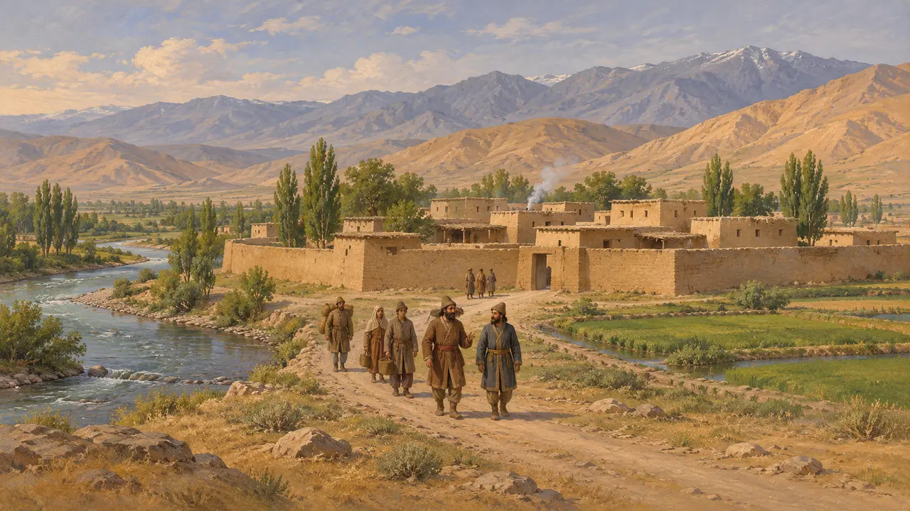
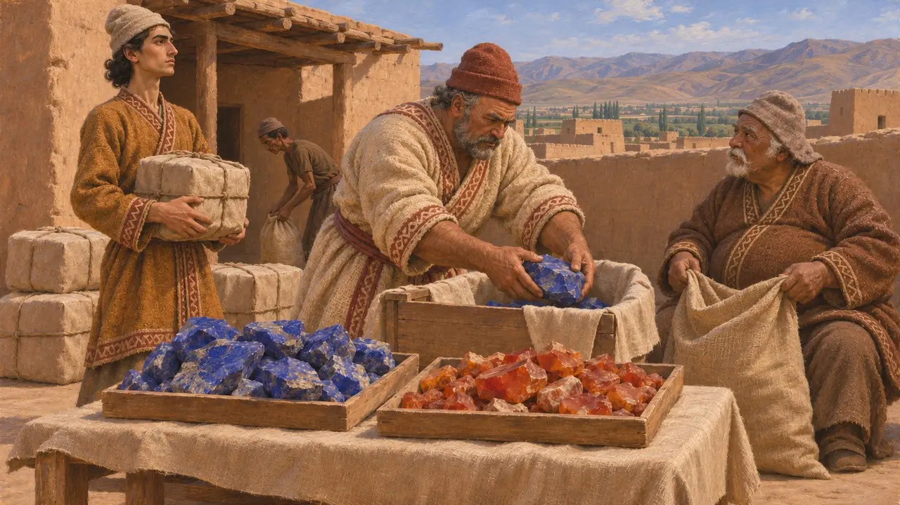
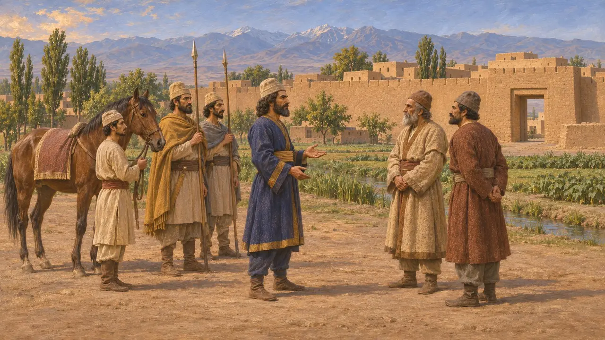
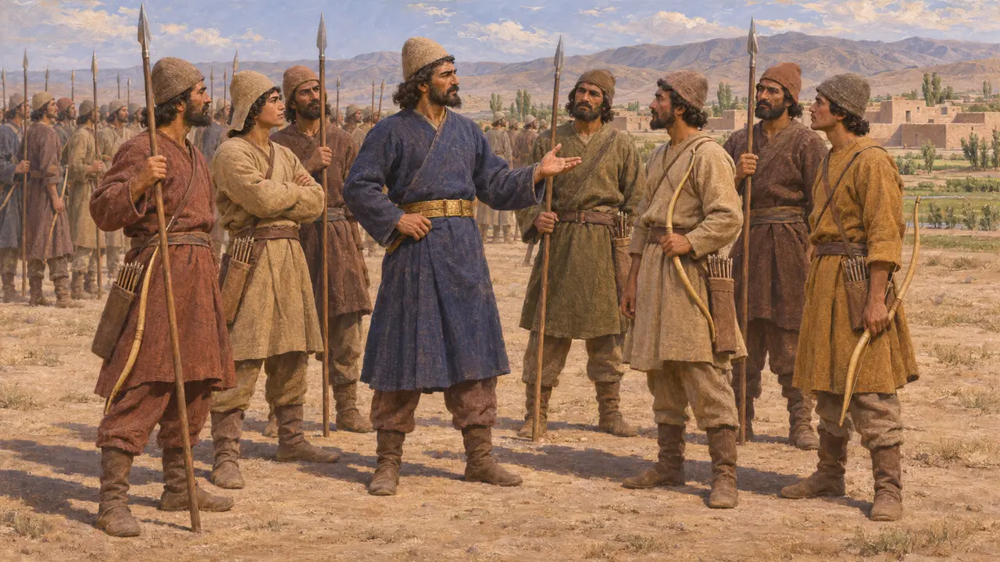

소그디아나는 옥수스강과 약사르테스강 사이, 박트리아 북쪽에 있었으며 제국의 극동 지방 중 하나였다. 다리우스의 왕실 비문에는 복속 지방으로 나오고, 수사 칙서에는 보석의 산지로 언급된다. 이는 대왕의 통치가 페르시아 본토를 넘어 얼마나 멀리까지 미쳤는지를 보여 준다.
게임에서: 이 게임에서 소그디아나는 연대기 항목과 백과사전의 사건 항목에만 등장합니다. 수사 칙서 같은 항목에서는 청금석과 홍옥수를 공급하는 땅으로 나옵니다. 소그디아나만을 위한 시스템은 없습니다.

소그디아나의 위치
당대 기록다리우스의 속국 목록은 동방 민족 가운데 코라스미아와 박트리아 가까이에 있는 소그디아나(수구다)를 거명한다. 이 목록은 다리우스의 치세에 이미 소그디아나가 제국의 영토로 여겨졌음을 보여 준다. 그러나 경계도, 통치 방식에 관한 상세한 내용도 전하지 않는다.
DB §6; DNa

수사 칙서에 언급된 재료
당대 기록다리우스는 수사 궁전의 건축 칙서에서 청금석과 홍옥수가 소그디아나에서 들어왔다고 말한다. 터키석은 호라즘에서 왔다. 이 기록은 궁전이 제국 전역의 힘으로 지어졌으며, 각 땅이 저마다의 재료를 바쳤다고 전한다.
DSf

정복과 그리스인의 시각
분쟁 중소그디아나를 페르시아의 지배 아래 처음 편입시킨 인물이 누구인지에 대해서는 역사가들의 견해가 일치하지 않는다. 많은 이는 키루스가 동방 원정을 벌였다고 보지만, 헤로도토스는 소그디아나 정복을 서술하지 않으며 당대의 어떤 문헌도 이를 기록하지 않는다. 헤로도토스의 세금 목록은 소그디아나인을 파르티아인, 코라스미아인, 아레이아인과 한 구역에 묶는데, 페르시아의 목록에는 이런 묶음이 보이지 않는다.
Herodotus 3.89-97; P. Briant, From Cyrus to Alexander, 2002

군대 안의 소그디아나인
분쟁 중소그디아나 병사들이 크세르크세스의 그리스 침공에 참전했는지는 확실하지 않다. 주된 사료는 헤로도토스가 적은 군대 목록인데, 역사가들은 그 수치가 크게 부풀려졌다고 본다. 그는 아르타이오스의 아들 아자네스가 이끄는 소그디아나인을 꼽지만, 그들이 그리스에 있었음을 확인해 주는 다른 사료는 없다.
Herodotus 7.61-99
출처
- DSf
- DB §6
- DNa
- Herodotus 3.89-97
- Herodotus 7.61-99
- P. Briant, From Cyrus to Alexander, 2002